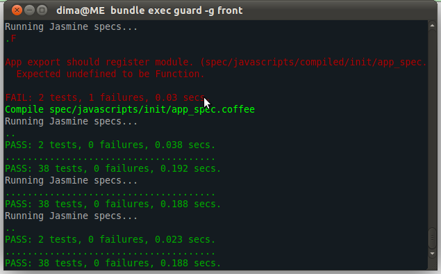

Testing your JavaScript
Just sharing my experience
Dmytrii Nagirniak (~ Dima)
Believer that Software Development is an art.
Dmytrii Nagirniak - Who am I?

Doing .NET (sorry to upset you) for living and Ruby for love and fun.
- Life wasn't challenging enough, so in 2010 jumped into Linux and Ruby.
- Winner of RubyLearning challenge #7.
- Currently Tech. Lead at PropConnect (Real Estate)
My recent public work
- NFactory - FactoryGirl for .NET.
- Connecty - Simple and free user Feedback (clone of UserVoice and similar).
- guard-rails-assets gem - automatically compile Rails 3.1 assets.
- CoffeeScript syntax highlighting with highlight.js.
Me on the web
- Tweeting @dnagir
- Blogging at blog.ApproachE.com
- Git-ing at github.com/dnagir
- LinkedIn-ed at au.linkedin.com/in/dmitriynagirnyak
- Also StackOverflow-ing
- The rest at ApproachE.com
Where it all started
A free time, side project with the usability as first priority. Design First Development.
- Great design was produced.
- Outsorced front-end development.
- Great looking result.
Make it all work
Main issue - too general assumption about interactions. Too much abstraction.
- All forms are validated the same way and always submitted via AJAX.
- All forms are submitted even though only 1 should.
- Infinite scrolling fetches unrelated resources, always.
- Any changes broke the world.
Technical issues - single file > 1000 LOC
Incredibly hard to maintain - all the front-end logic in a single file.
SBX.common.overlays();
SBX.common.scrolledToBottom();
SBX.common.toggleButtons();
SBX.common.ajax.loading();
SBX.common.ajax.problem();
SBX.common.placeholders();
SBX.common.searchFocus();
SBX.common.notifications();
SBX.common.validation();
SBX.images.showHideInfo("Show","Hide");
SBX.images.optionsTabs();
SBX.images.navigation();
SBX.images.nextImage();
SBX.images.commentsScrolling();
SBX.images.gearEdit();
SBX.images.titleEdit();
SBX.images.tagEdit();
SBX.images.fixIE();
SBX.images.likeButton();
SBX.users.moreUsers();
SBX.users.moreHappenings();
SBX.profile.tooltips();
SBX.profile.gearAutocomplete();
SBX.profile.removeGear();
SBX.upgrade.tooltips();
SBX.upload.createUploader();
SBX.upload.progressBar();
SBX.upload.sortImages();
SBX.settings.colorpickers();
SBX.settings.inPlaceEdit();
SBX.settings.imagePreview();
SBX.settings.liveColorEdit();
Technical issues - unknown behaviour
Often it was hard to understand WHY and WHERE particular thing works.
Example: Scrolling to bottom triggers 3 request to load totally unrelated resources.
try {
var data = $.parseJSON(dataR);
} catch (e) {
try {
dataR = dataR.replace(/<\/?pre[^>]*>/igm,"");
data = $.parseJSON(dataR);
} catch (ex) {
$(form).trigger("server-error",[jqXHR, textStatus, ex]);
}
}
Technical issues - unconditional initialisation
var moreUsers = function (){
$('.content').bind('on-bottom',function(){ /*...*/ })
},
var moreHappenings = function (){
$('.content').bind('on-bottom',function(){ /*...*/ })
}
/* etc */
// All handlers are executed as expected.
// But the interaction is NOT expected.
$('.content').trigger('on-bottom');
Would we outsource again: ~ ehh, Yeah
Let's just move on... Lessons learned:
- Front-End developer MUST be a part of the Team. All the fucking time!
- Don't ask to implement too much of the interaction.
- Ask to split functionality into small modules/files.
- Integrate the developed front-end into the app as it progresses - better feedback.
- Stop supporting old browsers. Don't fall back to
noscript(Even G+ doesn't!) [Warning - holly-war] - Decide what you do: rich application or HTML web site. Both might be too time consuming.
How to fix?
- Integration tests (Capybara >= 1.0).
- JavaScript unit testing.
- Incremental updates.
A word on Capybara
- Worked great initially.
- Conflicting RSpec matchers with webrat.
- Too hard to test JavaScript reach functionality.
As a result, disabled Capybara and had to do proper JavaScript testing.
Considered JS Unit Testing options
- JavaScriptMVC - very Rails-like, jQuery oriented. Includes complete toolset (packaging, dependency management, testing). But I wanted to maintain RSpec-like test structure. After asking on forums decided it's not the best fit.
- Selenium (1 and 2) and JsTestDriver - You need to run real browsers. A bit more hassle the I wanted.
- Jasmine - very RSpec and Ruby-like. All tests are on a single page. You need to run browser (even with CI option).
- Jasmine on steroids was the way out.
Tools that go with Jasmine: JavaScript
This basic additions changed the experience and feeling of testing in JavaScript
-
CoffeeScript - JavaScript with no
function, function, function - jasmine-jquery - jQuery matchers for Jasmine and FIXTURES support.
- jasmine-ajax - drop-in stubbing for XMLHttpRequest. All AJAX requests are stubbed y default. So you can't load FIXTURES from html files.
Tools that go with Jasmine: Ruby Gems
- jasmine-headless-webkit - run JS specs in a webkit browser but without running a browsers (cut the stupid head off).
- guard - run tasks when something changes.
- guard-rails-assets - automatically compile Rails 3.1 assets.
- guard-jasmine-headless-webkit - automatically run JavaScript specs when something changes (~autotest).
Setting everything up
Assuming you already have a Rails 3.1 (from 3-1-stable branch ATM). You need to:
- Update Gemfile
- Setup Guard
- Setup Jasmine
- Setup Jasmine: JavaScript tools
- Setup Jasmine: configure file locations
WARNING: Your millage WILL vary. A lot of stuff is in beta or used from source.
Update Gemfile
# Gemfile - only shortlist - add yours of course, including execjs
group :development, :test do
gem 'jasmine'
end
group :test do
gem 'guard-coffeescript'
gem 'guard-rails-assets'
gem 'guard-jasmine-headless-webkit'
gem 'jasmine-headless-webkit', :git => 'https://github.com/johnbintz/jasmine-headless-webkit.git' # https://github.com/johnbintz/jasmine-headless-webkit/issues/10#issuecomment-1348568
end
> bundle
Setup Guard
bundle exec guard init
# Guardfile
guard 'rails-assets' do
watch %r{^app/assets/.+$}
watch 'config/application.rb'
end
guard 'coffeescript', :output => 'spec/javascripts/compiled', :hide_success => true do
watch %r{^spec/javascripts/(.+\.coffee)$}
end
guard 'jasmine-headless-webkit' do
watch %r{^public/assets/application-(.*)\.js}
watch(%r{^spec/javascripts/compiled/(.*)_spec\..*}) { |m| newest_js_file("spec/javascripts/compiled/#{m[1]}_spec") }
end
Setup Jasmine
bundle exec jasmine init - you are set-up and shold be able to run sample specs
bundle exec rake jasmine:ci.
Setup Jasmine: JavaScript tools
> cd spec/javascripts/helpers/
> wget http://cloud.github.com/downloads/velesin/jasmine-jquery/jasmine-jquery-1.2.0.js
> wget https://raw.github.com/pivotal/jasmine-ajax/master/lib/mock-ajax.js
> wget https://raw.github.com/pivotal/jasmine-ajax/master/lib/spec-helper.js
NOTE: You might need to merge spec-helper.js manually.
Setup Jasmine: configure file locations
vim spec/javascripts/support/jasmine.yml
Use wildcard as Rails 3.1 assets include cache buster.
src_files:
- public/assets/first-priority-files-*.js
- public/assets/application-*.js
- public/assets/**/*.js
helpers:
- helpers/**/*.js
- compiled/helpers/*.js
spec_files:
- '**/*[sS]pec.js'
That should be it.
Done! Use it!
Runbundle exec guard, move the reminal away and start coding.

Example - namespaces
describe 'App', ->
someFunc = -> # empty function
describe 'export', ->
beforeEach -> App.exports 'fakeNamespace', 'module', {someFunc}
afterEach -> delete App.fakeNamespace
it 'should register namespace', ->
expect(App.fakeNamespace).toBeTruthy()
it 'should register module with functions', ->
expect(App.fakeNamespace.module.someFunc).toBe someFunc
Example - Rails CSRF with AJAX
describe 'Rails Ajax support', ->
beforeEach ->
$('head').append "<meta content='bla' class='test' name='csrf-token' />"
$('head').append '<meta content="authenticity_token" class="test" name="csrf-param" />'
App.utils.rails.init()
afterEach -> $('.test').remove()
it 'should include CSRF token from page', ->
$.get '/something'
request = mostRecentAjaxRequest() # notice AJAX is stubbed!
expect(request.url).toMatch /authenticity_token=bla/
Example - AJAX + alert + animation
describe 'comment deletion', ->
action = null
beforeEach ->
action = App.images.commentActions
action.init()
it "should remove the comment with AJAX", ->
item = $('.comments ul > li:first')
item.find('a.delete').click()
mostRecentAjaxRequest().response
status: 200
contentType: 'application/json'
responseText: '{"success": true}'
$.when(item).done ->
expect($(".comments ul.list")).not.toContain "> li"
Example - Inline Fixtures Factories
describe 'Imgae Info commenting', ->
beforeEach -> App.images.commenter.init()
it "should submit comment as AJAX", ->
setFixtures "
<div id=#{stringInterpolationIsUseful} class='content commenting'>
etc
</article>
</div>
"
$('form.comment').submit()
expect(mostRecentAjaxRequest()).toBeTruthy()
Example - AJAX, verifying REAL-ish DOM
it "should append comment after submit", ->
$('form.comment').submit()
respond mostRecentAjaxRequest()
expect($('article.image')).toContain '.comments ul > li.just-added-fake'
expect($('article.image')).not.toContain '.comments ul ul li.just-added-fake'
Example - DOM events
it 'should trigger next on click', ->
spyOn(nav, 'onNext')
el = $('a.next:first').trigger('click')
expect(nav.onNext).toHaveBeenCalledWith el[0]
it 'should load images on last click', ->
spyOnEvent $('.content'), 'on-bottom'
$('a.next:last').trigger('click')
expect('on-bottom').toHaveBeenTriggeredOn $('.content')
Example - Generating long HTML
html = ("
<div id='more#{i}' class='content-wrap'>
<div class='photo'>
<div class='image'>
<img src='data:image/gif;base64,R0lGODlhAQABAIAAAP///wAAACH5BAEAAAAALAAAAAABAAEAAAICRAEAOw=='/>
</div>
</div>
</div>
" for i in [1,3]).join "\n"
respond = (req) ->
req.response
status: 200
contentType: 'text/html'
responseText: html
# Can be used as:
respond mostRecentAjaxRequest()
Notes
- CoffeeScript MUST have parentesis to call function with NO args. Hurts if you miss this out.
- If you need to debug - just run jasmine as normally and do it in the browser.
- Watch out for indentation [Python is here]
- Watch out for
func: ->vsfunc = ->. - CoffeeScript compiles to JavaScript. Very easy to understand... if you know what JS is.
- CoffeeScript functions ALWAYS return a value.
Existing problems
- Compiling Rails assets is very slow. Please contribute to guard-rails-assets (spork?)
- All tests are still on a single page. Make sure you use
setFuxturesand/or clean up properly. - Compiled specs are in source control. Need guard running to autocompile CoffeeScript specs.
Challenges
- Understand the CoffeeScript.
- Understand the Jasmine's matchers, spies etc.
- Structure files properly.
- Keep balance between too much testing and no tests at all
- Keep balance between speed and quality (well, as usual).
Summary
- Got confidence in the project.
- Spent significantly more time thought.
- Still finding my way of testing it.